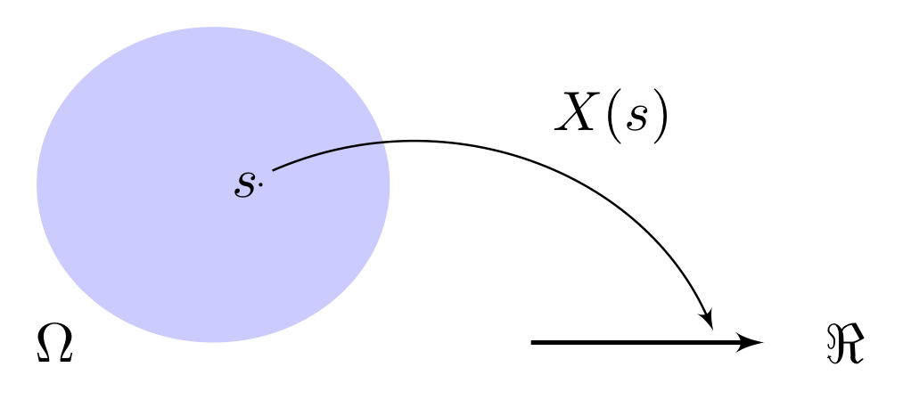

GED-13: Probabilidade e Estatística
Capítulo 05
Variáveis Aleatórias e Distribuições
Introdução
A partir deste ponto, nosso estudo de teoria de probabilidades torna-se mais rico com a introdução do conceito de variáveis aleatórias, que nos permitirá analisar situações de incerteza mais complexas do que as discutidas até então.
Antes de avançar, vale relembrar alguns fundamentos. Para um experimento aleatório \(E\), determinamos o espaço amostral \(\Omega\) (conjunto de todos os resultados possíveis) e definimos uma função de probabilidade \(P\), que expressa uma medida da propensão de ocorrência de cada evento em \(\Omega\). Essa abordagem fornece uma descrição probabilística completa da situação de incerteza representada pelo experimento em questão.
Por exemplo, considere o experimento de lançar uma moeda honesta e observar o resultado obtido. A descrição completa dessa situação é dada pelo espaço amostral \(\Omega = \{cara, coroa\}\) e pela lei de probabilidade que atribui chances iguais para os dois resultados: \(P[cara] = 1/2\) e \(P[coroa] = 1/2\).
Imagine agora uma situação mais complexa: uma pesquisa de opinião para avaliar o apoio de um grupo a uma determinada causa. Suponha que uma amostra de 50 pessoas desse grupo tenha sido selecionada para ser entrevistada, de forma que cada um desses indivíduos deve manifestar sua opinião, respondendo “sou favorável” ou “não sou favorável” à causa em análise. Para representar cada resposta, podemos associar o valor “1” a uma resposta positiva e “0” a uma resposta negativa. Assim, o espaço amostral é constituído por todas as possíveis 50-uplas de 0s e 1s que representam todas as combinações de respostas que as 50 pessoas entrevistadas podem produzir:
\[ \Omega = \{ (0, 0, \ldots, 0), (1, 0, \ldots, 0), \ldots, (0, 0, \ldots, 1), (1, 1, \ldots, 0), \ldots, (1, 1, \ldots, 1)\} \]
Cada elemento em \(\Omega\) (cada sequência de 50 respostas) terá uma chance de ocorrer, atribuída conforme a lei probabilidade. Desta forma, temos uma descrição completa da situação que permite calcular qualquer probabilidade de interesse. A dificuldade surge, porém, quando percebemos que este espaço amostral tem \(2^{50}\) elementos; definir um valor de probabilidade para cada um deles seria inviável na prática.
Assim, precisamos considerar a questão que de fato importa: Será que é realmente imprescindível descrever completamente esse experimento aleatório, ou podemos analisar apenas os aspectos de interesse? Se quisermos saber, por exemplo, “Qual a probabilidade de que no mínimo 26 das 50 pessoas apoiem a causa?”, talvez não seja necessário analisar cada uma das sequências de respostas possíveis. Em vez disso, podemos considerar apenas o número total de respostas favoráveis.
Para isso, podemos definir uma variável que captura a essência do problema:
\[ X = \textsf{número de pessoas que apoiam a causa, dentre as 50 entrevistadas} \]
Ao fazer isto, o experimento passa, então, a ser: entrevistar 50 pessoas e registrar unicamente o número de respostas favoráveis. O espaço amostral \(\Omega^\prime\) deste “novo” experimento resume-se a:
\[ \Omega^\prime = \{0, 1, 2, \ldots, 50\}, \]
um conjunto de apenas 51 elementos, bem mais simples de lidar do que as \(2^50\) possibilidades originais. Podemos atribuir probabilidades a cada valor que \(X\) assume e, assim, responder a perguntas sobre o apoio à causa de interesse, sem a necessidade de examinar cada configuração individual de respostas.
Concluímos, assim, que a escolha do espaço amostral associado a uma situação de incerteza não é única, mas depende diretamente de quais informações são relevantes para analisar o problema. Ao definir a quantidade \(X\), chamada variável aleatória, estabelecemos um mapeamento do espaço amostral original para um novo espaço mais simplificado, que retém apenas os aspectos relevantes do experimento.
Variáveis Aleatórias
Uma variável aleatória (v.a.) é uma função que associa cada elemento do espaço amostral \(\Omega\) (descrito em termos de eventos) a um número real. Em outras palavras, embora seja chamda “variável”, ela funciona como um mapeamento que associa a cada elemento \(s \in \Omega\) um número real \(x = X(s)\). Dessa forma, uma variável aleatória é uma representação numérica dos possíveis resultados de um experimento aleatório.

Costuma-se adotar a seguinte notação:
- \(X(\cdot)\) (maiúsculo) para a variável aleatória (isto é, a função),
- \(x\) (minúsculo) para o valor que esta variável pode assumir (a realização observada do experimento).
Como \(X\) é definida no espaço amostral, a probabilidade de ocorrer um evento \(s\) em \(\Omega\) equivale à probabilidade de \(X\) assumir determinado valor \(x\), ou seja, \(X(s) = x\). Representado essa probabilidade por \(P[X(s) = x]\), denotamos por \(p(x)\) a função que associa a cada valor de \(x\) a probabilidade correspondente. Naturalmente, \(p(x)\) deve satisfazer os axiomas de Kolmogorov para constituir uma função probabilidade válida.
Tipos de Variáveis Aleatórias
Neste curso, trataremos principalmente de variáveis aleatórias quantitativas, que podem ser classificadas como sendo discretas ou contínuas. Temos uma v.a. discreta quando os valores possíveis formam um conjunto finito ou enumerável (podem ser listados). Já em uma v.a. contínua, os valores formam um conjunto infinito não-enumerável, como um intervalo real.
Vejamos alguns exemplos de variáveis aleatórias discretas e contínuas:
Observamos que variáveis aleatórias permitem transformar um espaço amostral complexo em outro mais conveniente para os propósitos da investigação de interesse. Em outras palavras, elas reduzem a complexidade do experimento aleatório original, fornecendo uma descrição matemática mais sucinta, focada nos aspectos relevantes desse experimento.
Contudo, ao criar esse “artifício” matemático para simplificar os cálculos de probabilidade, há um preço a ser pago: passamos a precisar de uma nova função, a distribuição de probabilidade de \(X\),que resume todas as informações necessárias para descrever a incerteza em a respeito da variável aleatória. Veremos agora como isso é formalizado para v.a.’s discretas e v.a.’s contínuas.
Distribuições de Probabilidade
Função Distribuição de Probabilidade (FDP): caso discreto
Uma vez definida a variável aleatória \(X\), o espaço amostral \(\Omega\) deixa de ser essencial na descrição do seu comportamento probabilístico pois, para isso basta identificar todos os valores \(x_1, x_2, \ldots\), que \(X\) pode assumir e os respectivos valores de probabilidade. Essas informações são reunidas na função distribuição de probabilidade (FDP) de \(X\):
\[\begin{align*} f_X(\cdot): \Re \rightarrow [0,1] \quad \textsf{tal que} \quad {f_X(x)} = \left\{ \begin{array}{ll} P[X=x_j], & \text{ se } x = x_j, \\ 0, & \text{ se } x \neq x_j \end{array} \right. \quad \textsf{para} \quad j = 1, 2, \ldots \end{align*}\]
Observe que, embora o domínio de \(f_X\) seja o conjunto dos número reais (porque o contradomínio de \(X\) é \(\Re\), a imagem de \(f_X\) está no intervalo \([0,1]\). No caso discreto, cada valor \(x_j\) que a v.a. \(X\) pode assumir recebe um valor de probabilidade positivo, ao passo que valores fora desse conjunto têm probabilidade zero – ou seja, a probabilidade de um resultado impossível é 0.
A FDP descreve como a probabilidade total (1) se distribui entre os valores possíveis de \(X\). Para variáveis aleatórias discretas, tais pontos são comumente chamados de pontos de massa, razão pela qual também se usa o termo função massa de probabilidade para referir-se à FDP.
Para que a FDP seja função probabilidade, deve satisfazer os axiomas de Kolmogorov:
- \({f_X(x_j) \geq 0}\) para \({j = 1, 2, \ldots}\)
- \({f_X(x_j) = 0}\) sempre que \(x \neq x_j\)
- \({\sum_j f_X(x_j) = 1}\)
Exemplo 5 (Computadores Defeituosos)
Um lote de 8 computadores em uma loja contém 3 defeituosos. Um cliente seleciona 2 destes computadores ao acaso para comprar. Queremos determinar a distribuição de probabilidade para o número de computadores defeituosos comprados.
Solução:
Em primeiro lugar, precisamos identificar qual é a v.a. de interesse e que valores ela pode assumir. Às vezes, essa tarefa se torna mais fácil identificando o espaço amostral associado ao experimento aleatório em questão. Note que a pergunta já orienta a identificação da variável aleatória envolvida.
Defina \(X\) como o número de computadores defeituosos comprados pelo cliente. Os valores possíveis de \(X\) são 0, 1 ou 2, representando, respectivamente, “nenhum defeituoso”, “exatamente um defeituoso” ou “dois defeituosos”. Assim, o espaço amostral associado a este experimento é \({\Omega = \{0,1,2\}}\).
Para determinar a FDP de \(X\), precisamos calcular os valores das probabilidades para todos os elementos do espaço amostral, \(f_X(k) = P[X = k]\). Para isso, podemos recorrer à análise combinatória:
\[\begin{align*} & f_X(0) = P[X=0] = \frac{\binom{3}{0}\binom{5}{2}}{\binom{8}{2}} = \frac{10}{28}\\ & f_X(1) = P[X=1] = \frac{\binom{3}{1}\binom{5}{1}}{\binom{8}{2}} = \frac{15}{28}\\ & f_X(2) = P[X=2] = \frac{\binom{3}{2}\binom{5}{0}}{\binom{8}{2}} = \frac{3}{28} \end{align*}\]
No denominador, consideramos todas as formas de escolher 2 dentre os 8 computadores disponíveis, dadas por \(\binom{8}{2}\); no numerador, contamos as maneiras de selecionar a quantidade exata de computadores defeituosos e não-defeituosos para cada caso. Por exemplo, no caso de \(X=0\), o cliente selecionou dois computadores não-defeituosos. Isso significa que, dos 3 defeituosos disponíveis, nenhum foi selecionado (esta quantidade é determinada por \(\binom{3}{0}\)); os dois computadores comprados foram selecionados do grupo restante. É possível escolher um conjunto de 3 a partir de um total de 5 de \(\binom{5}{2}\) maneiras. Os outros casos seguem um raciocínio análogo.
Esses valores podem ser exibidos em uma tabela ou em um gráfico de barras, ilustrando claramenteda distribuição de probabilidade de \(X\).

Seguindo agora para o caso contínuo, convém lembrar que variáveis aleatórias contínuas estão associadas a processos aleatórios que descrevem algum tipo de medição. Na prática, nenhuma medição tem precisão infinita, de modo que tudo poderia ser modelado de forma discreta. Porém, por vezes, v.a.’s contínuas podem ser uma abstração matemática útil para simplificar os cálculos.
Suponha que \(X\) seja uma v.a. discreta e assuma o valor 3,5 (com precisão de uma casa decimal) com probabilidade \(p\). Se conseguirmos melhorar nosso processo de medição, de tal forma que agora é possível obter o valor de duas casas decimais, isso significa que o valor de probabilidade \(p\) associado ao valor 3,5 terá que ser distribuído entre todos os valores entre 3,50 e 3,59, obtidos a partir do refinamento. Assumindo que cada um desses valores ocorra com probabilidade \(p_i\), temos:
\[{p = P[X = 3,50] + P[X = 3,51] + ... + P[X = 3,59] = \sum_{i=1}^{10} p_i}\]
Se o processo de medição passar por um novo aprimoramento, de forma que uma casa decimal adicional seja obtida, teremos para cada \(p_i\) um refinamento equivalente, ou seja, o valor de cada probabilidade \(p_i\) deverá ser redistribuído entre os valores correspondentes. Perceba que repetindo indefinidamente esse refinamento, cada probabilidade pontual \(p_i\) tende a zero, mas a probabilidade de \(X\) estar em um intervalo como \([3,50, 3,59]\) se estabiliza. Esse raciocínio motiva a definição de função distribuição de probabilidade para variáveis contínuas.
Função Distribuição de Probabilidade (FDP): caso contínuo
Seja \(X\) uma v.a. contínua. A FDP de \(X\) é a função:
\[ {f_X(\cdot): \Re \rightarrow [0,\infty)} \]
tal que, para quaisquer \({a \leq b}\)
\[ P[a \leq X \leq b] =\int_{a}^{b} f_X(u) du \]
Note que, diferentemente do caso discreto, \(f_X(x)\) não é a probabilidade de \(X=x\) pois, em um espaço amostral contínuo, \(P[X = x] = 0\). Em vez disso, decorre da definição que a probabilidade de \(X\) se encontrar no intervalo \([a,b]\) é dada pela área sob \(f_X\) no intervalo \([a,b]\), como ilustra a figura abaixo:
As condições para que \(f_X\) seja uma função probabilidade legítima também decorrem da definição axiomática de Kolmogorov:
- \(f_X(x) \geq 0\), para todo \(x \in \Re\)
- \({\int_{-\infty}^{\infty} f_X(x) dx= 1}\)
- \(P[X=c] = 0\), para todo \(c \in \Re\)
Veja que a probabilidade de que \(X\) assuma um valor fixo igual à constante real \(c\) é nula (isso significa que, num espaço amostral infinito, a probabilidade de observar exatamente um valor real \(c\) vale zero). Como consequência dessa definição, também há diferença entre intervalos abertas ou fechadas. Portanto, para quaisquer números \(\mathsf{a < b}\):
\[ P[a \leq X \leq b] = P[a < X \leq b] = P[a \leq X < b] = P[a < X < b] \]
Para compreender por que \(f_X(x)\) não fornece uma probabilidade pontual associada a um evento em particular, considere um intervalo \([a-\epsilon, a+\epsilon]\), com \(\epsilon \rightarrow 0\). À medida que estreitamos o intervalo em torno de \(a\), a probabilidade tende a zero, ainda que a densidade de \(X\) (valor de \(f_X\) no ponto) possa assumir um valor arbitrariamente grande para \(X=a\).
\[ P[a - \epsilon \leq X \leq a+ \epsilon] = \int_{a-\epsilon}^{a+\epsilon} f_X(u) du \stackrel{\epsilon \rightarrow 0}{\approx} 2 \epsilon f_X(a) \]
Sendo assim, a FDP de \(X\) em \(a\) pode ser entendida como uma medida relativa da chance de que \(X\) se encontre em uma vizinhança de \(a\), ou como uma “massa de probabilidade por unidade de comprimento” na vizinhança de \(a\).

Muitas vezes pode ser útil expressar a distribuição de uma v.a. por meio da função distribuição acumulada (FDA), que se aplica tanto a variáveis discretas quanto contínuas. Diferentemente da FDP, a FDA é unicamente determinada para cada v.a. e pode ser utilizada para calcular probabilidades associadas a essa v.a.
Função Distribuição Acumulada (FDA)
A FDA de uma v.a. \(X\), representada por \({F_X(\cdot)}\) é a função:
\[\begin{align*} {F_X(\cdot): \Re \rightarrow [0, 1]\quad \textsf{tal que} \quad F_X(x) = P[X \leq x], \quad -\infty < x < \infty} \end{align*}\]
A fim de que seja uma função probabilidade legítima, a FDA de uma v.a. \(X\) deve satisfazer:
\({F_X(\cdot)}\) é monotônica não-descrescente: \(\;{F_X(x_1) < F_X(x_2), \; x_1 < x_2}\)
\({F_X(-\infty) = \lim_{x \rightarrow -\infty}F_X(x) = 0}\) e
\({F_X(+\infty) = \lim_{x \rightarrow +\infty}F_X(x) = 1}\)\({F_X(\cdot)}\) é contínua pela direita: \({F_X(x) = \lim_{0<h \rightarrow 0} F_X(x+h)}\)
A FDA precisa ser uma função monotônica não decrescente, de forma que, dados dois números reais \(x_1\) estritamente menor que \(x_2\), então a função em \(x_1\) tem de ser estritamente menor que a função em \(x_2\). Como a FDA representa uma probabilidade acumulada, \(F_X(-\infty) = 0\) significa que em \(-\infty\) nenhum valor de probabilidade foi acumulado (a probabilidade de observar um valor menor ou igual a menos infinito é zero); por outro lado, quando vamos para a outra extremidade da reta real, representada por \(\infty\), todo o domínio foi varrido e todos os valores de probabilidade já foram acumulados, portanto \(F_X(\infty) = 1\). Além disto, a FDA é uma função contínua pela direita.
Para variáveis discretas, a FDA tem forma de “degraus”, pois acumula nos pontos de massa de probabilidade; para variáveis contínuas, é uma função contínua cuja derivada (quando existe) é a propria densidade \(f_X(x)\).
Seguem algumas consequências dessas condições:
Dado \({x}\) qualquer, \[{P[X > x] = 1- F_X(x)}\]
Dados \({x_1}\) e \({x_2}\) tais que \({x_1 < x_2}\),
\[{P[x_1< X \leq x_2] = P[X \leq x_2] - P[X \leq x_1]}\]
Esta situação é ilustrada na figura pela área em vermelho menos a área em azul, que corresponde à área sob a FDP entre \(x_1\) e \(x_2\).

A seguir, destacamos como encontrar a FDA a partir de \({f_X(\cdot)}\) e vice-versa. É necessário fazer a distinção entre o caso discreto e o caso contínuo:
Caso Discreto:
Dada \({f_X(\cdot)}\),
\({F_X(x) = P[X \leq x] = \sum_{x_j <x}f_X(x_j)}\)Dada \({F_X(\cdot)}\),
\({f_X(x_j) = F_X(x_j) - \lim_{0<h \rightarrow 0} F_X(x_j - h)}\)
Para o caso discreto, para obter a FDA a partir da FDP, basta somar as probabilidades nos valores que satisfazem a condição desejada. Para obter a FDP a partir da FDA, basta utilizar a diferença dos valores de FDA em \(x_j\) e o valor da FDA em \(X\) imediatamente inferior a \(x_j\).
Caso Contínuo:
Dada \({f_X(\cdot)}\),
\({F_X(x) = P[X \leq x] = \int_{-\infty}^{x} f_X(u) du}\)Dada \({F_X(\cdot)}\),
\({f_X(x) = \frac{dF_X(x)}{dx}}\)
Para o caso contínuo, dada a FDP, a FDA em \(x\) é dada pela integral de \(-\infty\) e o valor de \(x\) desejado. Para obter a FDP a partir da FDA, basta tomar a derivada da FDA com relação a \(x\).
A seguir, são apresentados alguns exemplos de aplicação imediata desses conceitos.
Valor Esperado e Variância
Até agora, vimos que a distribuição de probabilidade de uma v.a. pode ser representada de várias formas: pela função distribuição de probabilidade (FDP), pela função distribuição acumulada (FDA), por representações gráficas ou por valores tabulados.
Tanto a FDP quanto a FDA são modelos construídos com a finalidade de resumir ou representar matematicamente fenômenos aleatórios. Dependendo da complexidade do problema, especificar essas funções de maneira completa pode ser extremamente trabalhoso ou inviável. Novamente, surge a questão se é realmente necessário construir uma descrição completa do problema, ou se é suficiente observar algumas características importantes da distribuição, que capturem a essência da incerteza.
Neste sentido, dois conceitos importantes em teoria de probabilidades tornam-se muito úteis: valor esperado e variância. O valor esperado, por exemplo, indica a localização do centro da distribuição, descrevendo quais são os valores típicos da v.a. em questão. A variância, por sua vez, nos dá uma medida da dispersão ou do nível de espalhamento dos valores assumidos pela v.a. em torno de seu centro. Embora sozinhos não forneçam uma descrição completa da distribuição, muitas vezes, conhecer o valor esperado e a variância podem ser suficientes para auxiliar o processo de tomada de decisão, pois resumem características importantes da distribuição.
Valor Esperado
Seja \(X\) uma variável aleatória. O valor esperado de \(X\), representado por \({\mu_X}\) ou \({E[X]}\), é definido da seguinte forma:
Caso Discreto:
\[
{E[X] = \sum_x x\cdot f_X(x)},\]
onde a soma é realizada em todos os valores \({x}\) que \({X}\) pode assumir.
Caso Contínuo:
\[
{E[X] = \int_{-\infty}^\infty x\cdot f_X(x) d(x)},\]
onde \({f_X(x)}\) é a FDP de \({X}\).
Para que \(E[X]\) exista, é necessário que \({\sum_x |x|f_X(x) < \infty}\) (no caso discreto) ou \({\int_{-\infty}^{\infty} |x|f_X(x)dx < \infty}\) (no caso contínuo) sejam finitos. Há distribuições, como algumas de caudas pesadas, para as quais não existe valor esperado.
Vejamos, a seguir, alguns exemplos.
Propriedades do Valor Esperado
Se existir uma constante \(a\) tal que \(P[X\geq a] = 1\), então \(E[X] \geq a\).
Se existir uma constante \(b\) tal que \(P[X\leq b] = 1\), então \(E[X] \leq b\).
Em ambos os casos, se é certo que \(X\) assume apenas valores maiores (ou menores) que uma dada constante, o valor esperado da v.a. também precisa ser maior (menor) que essa constante.Se a distribuição de \(X\) é simétrica em torno de um ponto (\(\mu\)), o ponto de simetria corresponde ao valor esperado, desde que ele exista: \[ f_X(x) = \varphi(x-\mu) = \varphi(\mu-x) \quad \Longrightarrow \quad E[X] = \mu \]
\({E[c] = c}\), para \({c}\) constante.
Obviamente, o valor esperado de uma constante é a própria constante. Neste caso, estamos diante de uma variável que não é aleatória, portanto, o valor esperado dessa variável é igual ao único valor que pode assumir.O valor esperado é um operador linear, ou seja, para constantes \(a\) e \(b\), vale:
\[ E[aX + b] = a E[X] + b \]
- De maneira geral, o valor esperado de uma função \(g(X)\) pode ser obtido sem que seja necessário determinar a distribuição de \(g(X)\):
\[\begin{align*} &E[g(X)] = \sum_x g(x) f_X(x) &&\textsf{(caso discreto)}\\ &E[g(X)] = \int_{-\infty}^{\infty} g(x) f_X(x) dx &&\textsf{(caso contínuo)} \end{align*}\]
- Em situações multidimensionais, se \({X_1, \ldots, X_n}\) são v.a.’s para as quais existe o valor esperado \(E[X_i]\), \(i = 1, \ldots, n\), então, para as constantes \(a_1, \ldots, a_n, b\): \[ E[a_1 X_1 + \ldots + a_n X_n + b] = a_1 E[X_1] + \ldots + a_n E[X_n] + b \]
Embora o valor esperado descreva a tendência central, ou seja, o ponto em torno do qual os valores da v.a. se distribuem, ele nada informa sobre sua dispersão em torno do centro. Uma maneira de medir a variabilidade de uma v.a. é considerando o quanto ela se afasta de sua média.
Variância
Para mensurar o espalhamento dos valores de \(X\) em torno do centro da distribuição \(\mu_X = E[X]\), definimos a variância \({Var[X]}\) (ou \({\sigma_X^2}\)):
Caso Discreto: \[ {Var[X] = E[(X-\mu_x)^2] = \sum_x (x-\mu_x)^2 \cdot f_X(x)}, \]
onde a soma é realizada para os pontos em que \(X\) é definida.
Caso Contínuo: \[
{Var[X] = E[(X-\mu_x)^2] = \int_{-\infty}^{\infty} (x-\mu_x)^2 \cdot f_X(x)},
\]
onde \(f_X(x)\) é a FDP de \(X\).
Propriedades da Variância
A variância corresponde à esperança de uma função quadrática, portanto não pode assumir valores negativos: \({Var[X] \geq 0}\)
Se a variância é nula, isso implica que a variável em questão não é aleatória, assumindo apenas um valor constante \(c\) e vice-versa: \[Var[X] = 0 \iff \exists \, c= \textsf{ constante, tal que } P[X=c]=1\]
Uma forma prática de calcular a variância emprega a expressão: \[{Var[X] = E[X^2] -\big(E[X]\big)^2}\]
Para constantes \(a\) e \(b\) \[Y = aX+b \quad \Longrightarrow \quad Var[Y] = a^2 Var[X]\]
Para a variância de uma função \(g(\cdot)\) de \(X\), basta utilizar a definição de valor esperado aplicada ao quadrado da diferença entre \(g(X)\) e o valor esperado de \(g(X)\), denotado por \(\mu_{g(X)}\):
\[\begin{align*} & Var[g(X)] = E\{[g(X) - \mu_{g(x)}]^2\}:\\ \\ &Var[g(X)] = \sum_x [g(X) - \mu_{g(x)}]^2 \cdot f_X(x) &&\textsf{(caso discreto)}\\ &Var [g(X)] = \int_{-\infty}^{\infty} [g(X) - \mu_{g(x)}]^2 \cdot f_X(x) dx &&\textsf{(caso contínuo)} \end{align*}\]
- Outra medida de dispersão de uma v.a. é o desvio-padrão: \[{\sigma_x = +\sqrt{Var[X]}}\] O desvio-padrão é dado nas mesmas unidades da v.a., o que torna seu uso preferível à variância em muitas aplicações.
Momentos
Além das medidas de localização e dispersão apresentadas anteriormente, existem outras medidas que descrevem diferentes características de uma distribuição.
Os vários momentos de uma variável aleatória representam uma classe importante de esperanças que podem ser utilizadas para descrever completamente uma distribuição de probabilidade.
Já vimos dois momentos importantes: a média (que corresponde ao primeiro momento de uma variável aleatória e descreve a localização do centro de sua distribuição) e a variância (que corresponde ao segundo momento central e descreve o espalhamento ou dispersão dos valores assumidos pela variável aleatória em torno de seu centro).
No século XIX, era uma prática comum entre os estatísticos tratar qualquer distribuição de frequência como sendo normal ou Gaussiana, isto é, tendo forma de sino: histogramas multimodais (aqueles com múltiplos picos) eram ajustados com misturas de gaussianas, assimetrias eram removidas através de transformações que garantissem a normalidade da distribuição e simetria era vista como uma evidência irrefutável da normalidade da população.
Foi neste contexto que Karl Pearson propôs (1894) um sistema de curvas (de distribuições) com diversas formas possíveis, de modo a permitir uma representação mais acurada dos dados observados, utilizando para isso momentos de ordens mais elevadas. Esse sistema de curvas era completamente determinado por quantidades associadas ao terceiro e quarto momentos centrais de uma variável aleatória.
Assimetria (skewness) e Excesso (kurtosis)
Os momentos centrais de 3a. e 4a. ordem estão associados aos conceitos de assimetria e excesso (ou curtose).
As medidas de assimetria indicam a diferença da distribuição das observações, se comparadas à distribuição normal (que tem forma de sino e é simétrica). Em uma distribuição simétrica, os valores de média, mediana e moda são idênticos.
Para distribuições unimodais com assimetria negativa, o valor da moda é maior que a média e a mediana se encontra entre a média e a moda; a distribuição apresenta cauda inferior (à esquerda) longa, de forma que a média é deslocada para baixo. Por outro lado, para distribuições unimodais com assimetria positiva, a média é maior que moda e a mediana se encontra entre a moda e a média. Distribuições com assimetria positiva admitem valores muito maiores que a maior parte das observações, de forma que a cauda à direita é mais longa e a média é deslocada para cima.
Distribuições assimétricas surgem em diversas situações como, por exemplo, quando a variável aleatória de interesse é renda, preço de imóveis, duração ou vida de um produto, idade no instante da aposentadoria entre outras.
A curtose é uma propriedade de distribuições simétricas e se refere ao nível de achatamento da distribuição, com relação à distribuição normal.
Distribuições mais espalhadas e achatadas que a distribuição normal são chamadas platicúrticas e apresentam valores negativos de curtose; distribuições mais concentradas em torno da média, isto é, que apresentam um pico mais elevado, são chamadas leptocúrticas e apresentam valor de curtose elevado. A distribuição normal, utilizada como referência, é chamada mesocúrtica. Valores elevados para a curtose podem estar associados à presença de observações extremas (outliers).
Desigualdades de Markov e Chebyshev
Até agora, vimos que a fim de calcular probabilidades, precisamos conhecer a distribuição de probabilidade associada a uma determinada variável aleatória. Entretanto, é comum nos depararmos com a situação em que é muito difícil ou inviável obter a FDP ou FDA e possuímos apenas informações parciais sobre a v.a., como valor esperado e/ou a variância. Nesses casos, embora não possível calcular com exatidão certas probabilidades, ainda é possível estabelecer limites para elas.
Por exemplo, nossa intuição nos diz que deve ser raro observar uma v.a. se desviar demasiadamente de seu valor esperado, ou seja, não esperamos observar a ocorrência de eventos extremos com muita frequência. Mas qual a probabilidade de observar um valor atípico de uma variável aleatória? Em outras palavras, qual a probabilidade de que ela assuma um valor maior que uma certa quantidade?
Veremos a seguir como dois resultados simples e universais, as desigualdades de Markov e Chebyshev, fornecem argumentos matemáticos sólidos para confirmar tais conjecturas e responder a perguntas como essas.
A desigualdade de Markov é mais comumente enunciada na forma do corolário abaixo.
A desigualdade de Markov nos dá um limite superior para a probabilidade de uma variável aleatória não-negativa ser maior ou igual a uma constante positiva \(k\). Note que este limite superior é universalmente válido, ou seja, independe da distribuição de \(X\). Veja que se o valor esperado é pequeno, a probabilidade de que a v.a. assuma um valor elevado também é pequena.
Estamos especialmente interessados em valores elevados de \(k\). Quando \(k\) é menor ou igual ao valor esperado de \(X\), a desigualdade não nos dá nenhuma informação, pois sabemos de antemão que essa probabilidade deve ser menor ou igual a 1.
Utilizando a desigualdade de Markov, podemos verificar resultados interessantes: por exemplo, para qualquer variável aleatória não-negativa \(X\), cuja média vale 1, o maior valor possível para a probabilidade de que \(X\) seja maior ou igual a 100, é 0,01.
Uma consequência da desigualdade de Markov é a desigualdade de Chebyshev, que veremos a seguir. Essa desigualdade recebe o nome do matemático russo Pafnuty Chebyshev, que a enunciou pela primeira vez (sem demonstrá-la) em 1874. Dez anos depois, Andrey Markov (aluno de Chebyshev), demonstrou a desigualdade em sua tese de Doutorado.
A desigualdade de Chebyshev nos diz que a probabilidade de \(X\) se afastar pelo menos \(\theta\) desvios-padrão de sua média é, no máximo, \(1/\theta^2\). Alternativamente, a probabilidade de que \(X\) esteja a uma distância de sua média menor que \(\theta\) desvios é de pelo menos \(1 - 1/\theta^2\).
Assim, a desigualdade de Chebyshev nos diz, em particular, que para qualquer conjunto de dados, independentemente da distribuição de probabilidade associada à v.a. em análise, pelo menos 75% das observações se encontram a uma distância máxima de dois desvios de sua média (para \(\theta = 2\)); e pelo menos 89% de todas as observações se encontram a uma distância máxima de três desvios de sua média (para \(\theta = 3\)).
Em síntese, as desigualdades de Markov e Chebyshev nos permitem fazer afirmações probabilísticas quando temos muito pouca informação a respeito de uma variável aleatória. Com essas desigualdades, podemos calcular limites para probabilidades quando conhecemos apenas a média (e também variância, no caso de Chebyshev) de uma v.a.. Embora esses limites sejam amplos ou conservadores, são universalmente válidos, independentemente de suposições específicas a respeito da distribuição da variável aleatória em questão.